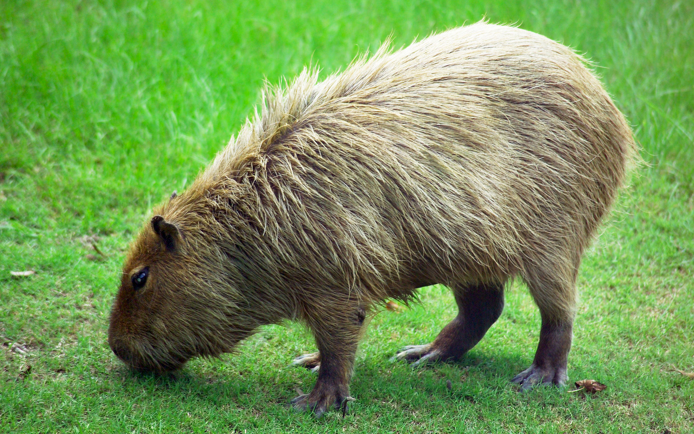

Капиба́ра[1], или водосви́нка[2] (лат. Hydrochoerus hydrochaeris) — полуводное травоядное млекопитающее из семейства водосвинковых (Hydrochoeridae), один из двух (наряду с малой водосвинкой) ныне существующих видов рода водосвинки. Капибара — самый крупный среди современных грызунов.
